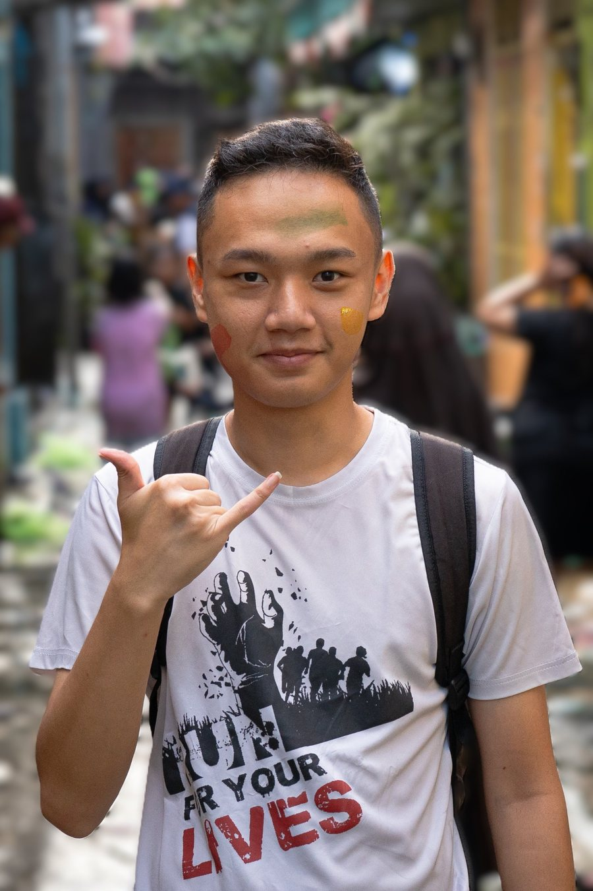

Photo · Film · Post-production
About Me
Hi, Saya Oei Ricky Wijaya, Lulusan Film di Universitas Multimedia Nusantara. Saya berpengalaman dalam dunia marketing dan kreatif. Keahlian saya menjadi producer, videografer, fotografer, editor, dan motion graphic. Dalam setiap proyek, saya menggabungkan keindahan visual dengan storytelling yang memiliki kesan premium untuk corporate dari company profile, commercial, sampai kebutuhan sosial media dan saya juga melakukan video dan photo untuk acara personal.

Selected work
A selection from the contact sheet.
Services
Three crafts, one visual direction.
-
Photography
Visual stories told with controlled light. Every assignment starts with a location scout and ends with a tidy private gallery.
- Private weddings and events
- Portraits and editorial
- Property, architecture, interiors
- Product and food
-
Film
Brand films, wedding films, and short documentaries. Shot in 4K with clean sound design and a deliberate editing rhythm.
- Brand films and commercials
- Cinematic wedding films
- Event aftermovies
- Family and corporate documentaries
-
Editing
Already have your own footage or photos? I polish them until they feel like a feature-film production, with no reshoot needed.
- Color grading and finishing
- Skin and product retouching
- Film editing
- Motion graphics
The edit bench
Ordinary footage, made cinematic.
Drag the line left and right. The left side is raw footage in a log profile; the right side is the result after color, contrast, and skin-tone grading.
- Grading
- Log to Rec.709
- Retouch
- Skin and product
- Master
- ProRes 422 HQ
- Delivery
- 4K, HD, vertical 9:16
Approach
I don't chase the number of photos. I chase one image that makes people stop and look a little longer.
Limited slots
I take on only a few projects each month so every client gets my full attention from start to finish.
One visual standard
Photo, film, and edit are completed under one direction, so all of your material feels like it comes from one hand.
Privacy first
Client work is never published without written permission. Galleries are delivered through private links.
Process
From the first conversation to the final file.
Consultation
I listen to your story, location, and references, then put together a moodboard and shot list.
Pre-production
Location scouting, light scheduling, permits, and a team briefing.
Production
I work calmly and almost unseen, with a small crew when needed.
Selection and edit
The first photo picks and film cut for you to review.
Delivery
Final full-resolution files, a private gallery, and a backup archive.
Next step
Already have a date in mind?
Contact sheet · 9 frames
Selected work
Production calendar
Pick your date.
Struck-through dates are already booked. Pick an available date, then submit it through the contact form. I confirm within one business day.
Contact
Tell me about your project.
Fill in the short brief alongside, then send it via WhatsApp or copy it to email. I reply within one business day.
View the production calendar